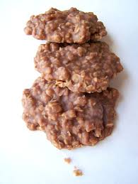

No Bake Cookies

Description
This recipe is very popular with the family. It is not only simple to make but also delicious!
This recipe takes a while for the cookies to solidify so make sure to account for cooling time in order to properly consume them.
Ingredients
- 2 cups of sugar
- 1/2 teaspoons of salt
- 1/2 cup of milk
- 1/4 cup of cocoa
- 1 stick of margarine
- 1/2 cup of peanut butter
- 3 cups of oatmeal
- 1 teaspoon of vanilla
Steps
- First, Boil the sugar, salt, milk, cocoa, and margarine together for 1 minute.
- Then, add peanut butter, oatmeal, and vanilla.
- Next, put form into teaspoon sized balls onto wax paper.
- Lastly, allow to cool on a open table or a refridgerator until solid.
Back to homepage!
Home!